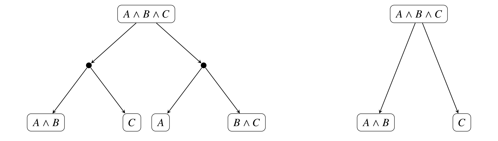
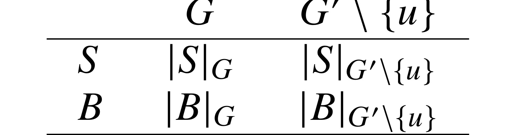
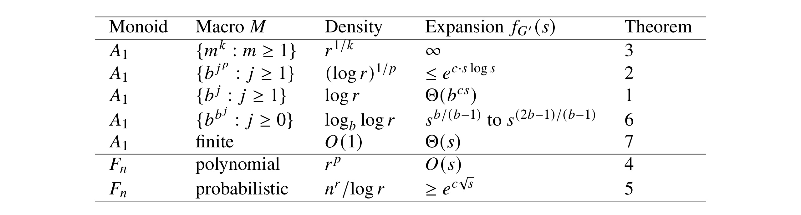
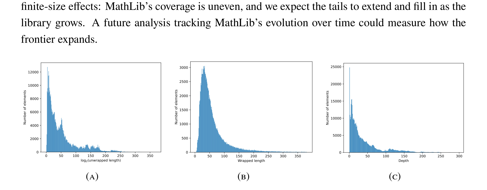
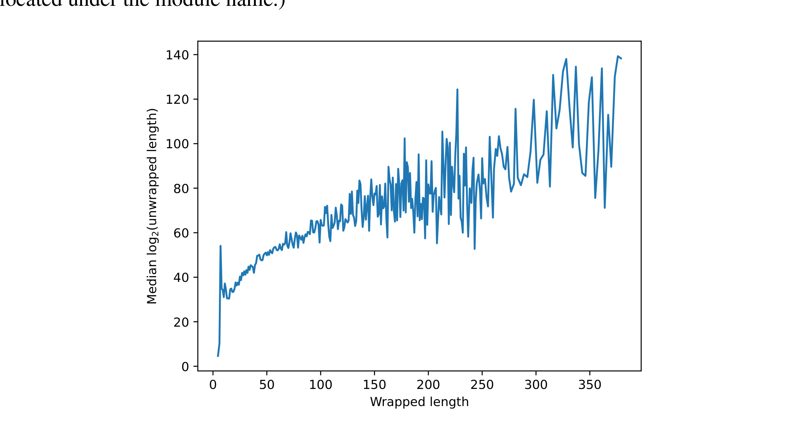
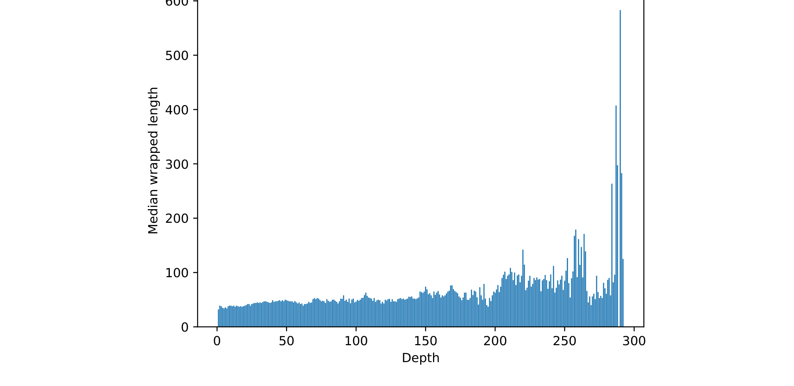
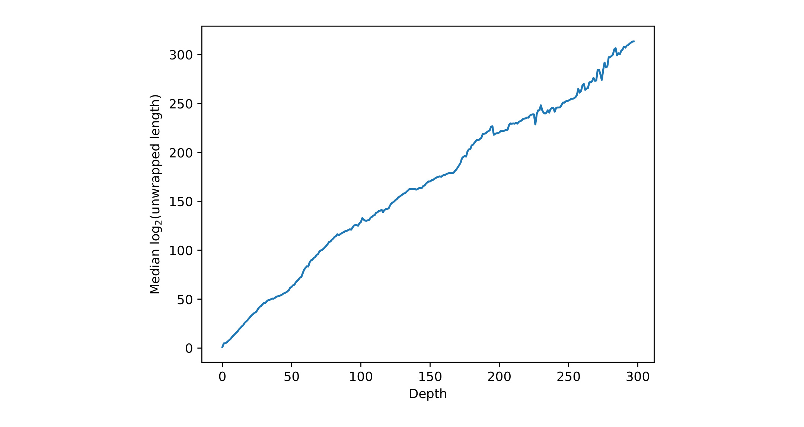
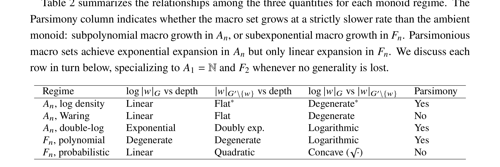

这篇 2026 年 3 月公开在 arXiv 的论文 Compression is all you need: Modeling Mathematics 由 Vitaly Aksenov、Eve Bodnia、Michael H. Freedman 和 Michael Mulligan 合作完成。资深作者 Mike Freedman 同时挂 Harvard CMSA 与 Logical Intelligence，Mike Mulligan 来自 UC Riverside；一作 Vitaly Aksenov 与 Eve Bodnia 的具体单位本轮未核验，因此目录与笔记前缀使用资深作者所在的 Harvard CMSA。论文没有公开独立项目页或源码仓库，文中的 Lean 4 形式化由 Logical Intelligence 的 Aleph 系统完成，未列入独立链接。Harvard CMSA Freedman Seminar 在 Compression Is All You Need: Modeling Mathematics 公开了同名报告摘要。文章面向的是“为什么人类做的数学和形式数学完全不在同一个尺度上”这个老问题，给出的答案是：人类数学占据形式数学中可被层级化定义压缩的那一小块，并把这个直觉变成一个可在 MathLib 上检验的定量模型。阅读重点放在 monoid 模型、宏集合（macro set）的扩张函数、A_n 与 F_n 在不同密度下的行为差异、MathLib 三个观测量（unwrapped / wrapped / depth）的关系，以及作者后续提出的 T_0、I_0 与 PageRank 风格的“数学品味”度量。本笔记面向推荐系统和大模型方向的工程读者，会刻意保留论文里的几何直觉，避免把它读成纯数学猎奇文。
1. 背景和问题
1.1 为什么数学“可压缩”是一个值得严肃研究的问题
数学家直觉里有一个长期共识：人写下来、能读得动、愿意花时间证明的数学，只是“所有合法演绎”这个巨大空间里的一小块。论文把这个直觉拆成两个层次：形式数学 FM 是公理与推理规则下所有合法演绎的集合，可以视为一个由公理出发、由推理规则张开的有向超图（DH）；人类数学 HM 是人类实际发现并赋予价值的那一部分，是一个我们能写论文、能写教科书、能让 AI 帮我们继续推进的子集。问题在于：HM 与 FM 的差异到底是什么样的差异？仅仅是“HM 比 FM 小很多”这种数量上的差距，还是 HM 在 FM 中有结构性、几何性的特征？以前的回答多数停留在前者，比如香农信息论的“几乎所有字符串都是 incompressible 的”这种统计断言；但本文认为统计上的小不能解释 HM 为什么对人类来说是“可读的”，必须把可读性还原成几何意义上的可压缩性。
作者给出的核心论断是：HM 与 FM 的关键差别不是大小，而是可压缩性。准确地说，是“通过分层嵌套定义、引理与定理来逐层压缩”的能力。一个简单到不能再简单的例子就是位值记号。自然数 $\mathbb{N}$ 只用一个生成元 $\{1\}$ 就能定义，但要写一个像 $10^{12}$ 这样的数，需要 $10^{12}$ 个 $1$ 排成一行。位值记号通过引入 $10$、$100$、$1000$ 这些“宏”，把表达式长度压缩到 $\log r$ 级别，同时把可被表达的数量提升到指数级。这种事情看起来普通，但作者强调它具备两个关键特征：hierarchy（层级性）——$1000$ 由 $100$ 组装、$100$ 由 $10$ 组装；parsimony（节俭性）——人类工作记忆有限，定义不能太多，但每个定义都要承担足够的杠杆。HM 与 FM 的差别，按照论文的提议，本质上是位值记号这种“层级 + 节俭”的压缩机制在整个数学中的推广。
这个角度意义重大，原因有四个。第一，它把“人类数学的特征”从“品味”“审美”“历史选择”这种主观范畴，转化成可在数学客体上度量的几何/组合性质。第二，它给 AI 系统在形式数学上做搜索时提供了方向感：与其在指数大的 FM 中盲目枚举，不如优先停留在“可压缩”的区域。第三，它让“数学有趣性”可以被量化：一个能把巨大证明压缩成短陈述的对象，从信息论角度看就是“有趣的”。第四，它和 P vs NP 这类经典复杂性命题挂上钩——如果 P≠NP，那么大多数布尔不可满足陈述的最短证明本质上是指数长的、不能被定义层级压缩的，这就把 FM 中“不可被压缩的厚海洋”和 HM 中“被压缩的稀薄子集”分开了。
1.2 形式数学的有向超图视角与 MathLib 的 DAG 投影

图 1 解释了为什么 monoid 模型适合刻画这件事。左半边是 FM 的有向超图：节点是命题或对象，每条超边记录一种推理步骤的所有前提，例如要从 $A\wedge B$ 与 $C$、或者 $A$ 与 $B\wedge C$ 都可以推出 $A\wedge B\wedge C$，这就是两条不同的超边。FM 是这样一张超图的全部，记录了所有可能的证明路径。但人在写形式化库（例如 Lean 4 的 MathLib）时，不会保留全部超边，而是为每个定理选择一条具体证明，把超图坍缩成一个有向无环图（DAG），节点是命名过的引理/定义/定理，边是“在内部表达式中引用过”。把任何一个 MathLib 元素 $u$ 沿着这个 DAG 一路展开到原语（primitives），就得到一个由原语符号组成的字符串，论文把这个字符串的长度叫做 $u$ 的 unwrapped length。
把 FM 的证明展开成原语字符串后，自然适合用幺半群（monoid）建模：原语就是生成元，证明就是字符串，命名一个子串当作一个新的生成元就是“引入定义”。这样，引入定义的能力被抽象成“给生成集 $G$ 加上一个 macro set $M$”，而这个 monoid 与 macro set 的几何结构，决定了多少长字符串可以被多少短字符串覆盖。论文之所以选择 monoid 而不是群，是因为群的逆元会引入“消去技巧”，让任何字 $w$ 都可以写成两个几乎抵消的宏 $m m'$，使扩张分析失去意义；而 monoid 没有逆元，更接近“证明只能向前展开”的直觉。Post 1947 年用 monoid 编码停机问题之所以比群早十几年，正是因为 monoid 没有逆元、字问题相对简单；论文把这种历史巧合也作为支持论据。
把 monoid 当作 metric space 来研究是 Cayley 图意义上的标准做法。每个生成集 $G$ 给 monoid 上的元素一个长度 $|w|_G$，可以视作元素到单位元的图距离。引入 macro 等价于给 Cayley 图加一组捷径。监督学习里类似的事情比比皆是：tokenizer 给词加捷径、shared embedding 给特征加捷径、KV cache 给 attention 加捷径。论文用 monoid 来刻画这种“给字符串加捷径”的几何，本质上是把工程优化和数学定义放进同一种框架。
1.3 论文要回答的核心问题
论文把上述直觉精炼成一个可以严格回答的问题：给定一个生成集 $G$，再给 $G$ 加上一个 macro set $M$，得到 $G' = G\cup M$，那么 macro set 的密度（多少个宏）和扩张能力（覆盖多大半径的球）之间是什么关系？ 在不同 monoid 下这个关系是否不同？哪一种 monoid 与人类数学的 MathLib 数据更吻合？
具体而言，作者关心两个最简单的 monoid。第一个是自由阿贝尔幺半群 $A_n$，生成元交换，元素本质上活在 $\mathbb{N}^n$ 里，长度就是各分量之和；第二个是自由（非交换）幺半群 $F_n$，元素是 $G$ 上的字符串，长度就是字符串长度。前者的球以多项式速度增长，$|B_G(r)|=\binom{r+n}{n}$；后者的球以指数速度增长，$|B_G(r)|=\frac{n^{r+1}-1}{n-1}$。直觉上，形式证明是有顺序的字符串，应该用 $F_n$ 建模；但作者要论证的恰恰是反直觉结论：人类数学的可压缩性更像 $A_n$，不像 $F_n$。
论文同时给出了一个更深的解读：HM 不仅是 FM 的“极小子集”，而是 FM 中以多项式速度增长的薄层。如果两者都以指数增长但底数不同，HM 也只是“同等指数的更小指数”；但论文 MathLib 的实证给出的是“多项式 vs 指数”的体积差，这是一个比传统香农信息论意义上的“小集合”更强的几何陈述。这个判断对自动化数学研究的价值在于：在 FM 这种指数大的空间里搜索是无望的，但如果 HM 真的躺在一个多项式增长的子流形上，AI 代理的搜索方向就有了几何上的指引。同时，作者还把这件事和 Lie 代数 / Iwasawa 分解类比：极大环面 $T^{n-1}\hookrightarrow SO(n)$ 类似 $A_n\hookrightarrow \prod F_{n_i}$，幂零幺半群 $Nil_{n,k}\hookrightarrow \prod F_{n_i}$ 又类似 Iwasawa 分解 $G=KAN$；这种几何类比虽然不直接进入证明，但提示我们 monoid 的层结构可能与某些已知物理/几何对象同构。
2. 方法
2.1 monoid 模型与 macro set 的形式化
设 $G=\{a_1,\dots,a_n\}$ 是一组原语生成元。一个 monoid 上的元素 $w$ 有一个长度 $|w|_G$：在 $A_n$ 上是各分量之和，在 $F_n$ 上是字符串长度。一个 macro set $M=\{g_i\}$ 是额外引入的生成元，每个 $g_i$ 由某个 $G$ 上的字 $w_i$ 定义，相当于给那个字起了一个名字。增广生成集是 $G' = G\cup M$，对元素 $w$ 我们有
$|w|_{G'}\le |w|_G$ 总是成立，因为 $G\subseteq G'$。直观上，$|w|_{G'}$ 就是“在你的定义库 $M$ 之上，把 $w$ 写出来最短要几个 token”。MathLib 里一个 lemma 的 wrapped length 在论文里被严格对应到 $|u|_{G'\setminus\{u\}}$，也就是“在不允许引用自身的前提下，写下这个 lemma 需要多少 token”。论文还顺手给 monoid 上每个元素 $u$ 定义了一种“最优表示意义下的 depth”：原语深度为 0；其余元素 $u$ 的最优表示要么只用原语（depth=1），要么是 $1+\max\{\text{depth}(v)\}$，其中 $v$ 是该最优表示中出现的非原语元素。这个 depth 是论文里用于 $A_n$/$F_n$ 各 regime 比较的关键尺子，与 MathLib DAG 上“到原语最长路径”的 depth 不完全相同——MathLib depth 反映作者写作选择，monoid depth 反映理想压缩下的层级，两者会有差异，但同阶。
衡量一个 macro set 是否“好”，作者引入扩张函数：
这里 $B_G(r)=\{w:|w|_G\le r\}$ 是 $G$-球，$B_{G'}(s)=\{w:|w|_{G'}\le s\}$ 是 $G'$-球。$f_{G'}(s)$ 表示“只允许使用 $s$ 个 macro+原语 token，可以覆盖多大 $G$-半径的球”。这个函数是论文引入的一个新概念，它推广了加法数论中“additive rank”的思想，但更适合于无法做到“一定能覆盖整个 $\mathbb{N}$”的稀疏宏集合。论文最后一节甚至有一个自指评论：研究“定义在数学中的角色”这件事本身又催生了一个新定义，定义化的需求是数学行为的根本特征。

为了后面 $T_0(u)$、$I_0(u)$ 两个度量做铺垫，论文在第 24 页给出一个 2x2 示意：行是“$S$ 表示 signature/陈述”、“$B$ 表示 body/证明”；列是“以 $G$ 为生成集”、“以 $G'\setminus\{u\}$ 为生成集”。四个格子分别填入 $|S|_G$、$|S|_{G'\setminus\{u\}}$、$|B|_G$、$|B|_{G'\setminus\{u\}}$。横向比值衡量“定义体系给陈述（或证明）带来的缩水”，纵向比值衡量“在最优定义体系下，证明长度是陈述长度的多少倍”。该示意虽然结构简单，但它把 monoid 模型的两个核心几何量（unwrapped vs wrapped）与 MathLib 的 signature/body 二元结构精确对齐，使后文 $T_0$、$I_0$ 的定义不需要任何额外说明就可以读懂。读者可在 4.2 节看到它如何被组合成数学品味度量。
符号解释：$G=\{a_1,\dots,a_n\}$ 是 monoid 的原语生成集（在 $A_n$ 是 $n$ 个独立交换生成元，在 $F_n$ 是 $n$ 个非交换字母）；$M=\{g_i\}$ 是 macro 集合，每个 macro $g_i$ 由 $G$ 上的字 $w_i$ 命名得来；$G'=G\cup M$ 是增广生成集；$|w|_G$、$|w|_{G'}$ 分别是用 $G$ 与 $G'$ 表示元素 $w$ 时所需的最短 token 数；$|u|_{G'\setminus\{u\}}$ 表示在所有 macro 都可以引用、但禁止引用自身 $u$ 时的最短 token 数，对应 MathLib 中的 wrapped length。$B_G(r)$ 是 $G$-球（$|w|_G\le r$ 的元素集合），$|B_G(r)|$ 在 $A_n$ 上是 $\binom{r+n}{n}$ 这种多项式量级，在 $F_n$ 上是 $\frac{n^{r+1}-1}{n-1}$ 这种指数量级；$S_\ell$ 表示 $G$-球面（$|w|_G=\ell$ 的元素集合）；$f_{G'}:\mathbb{N}\to\mathbb{N}$ 即扩张函数，是论文衡量 macro 是否好用的核心量；$S$ 表示某 MathLib 元素的 signature（陈述）token 串，$B$ 表示其 body（证明）token 串，$|S|_G$、$|B|_G$ 是它们的 unwrapped 长度，$|S|_{G'\setminus\{u\}}$、$|B|_{G'\setminus\{u\}}$ 是它们在 4.2 节意义下的 wrapped 长度。
2.2 主要扩张定理总览

表 1 是论文的核心总览，把 5+ 个 regime 的扩张函数都列了出来。它告诉我们 macro 的“密度”（在 $G$-球内有多少个 macro）和它们带来的“扩张能力”之间的换算关系。下面按行解释这张表，并把对应定理整理出来。
第一行是 $A_1=\mathbb{N}$ 上的 $\{m^k a : m\ge 1\}$ 宏集合，密度大约 $r^{1/k}$，扩张函数 $f_{G'}(s)=\infty$。这是 Theorem 3：用足够多“立方数”这样的宏，加上 Waring 定理，每个自然数都能被有限个 $k$ 次幂之和表示，因此 $G'$-长度有界，扩张函数等于无穷。
第二行是 $A_1$ 上 polylog 密度的宏集合 $\{b^{j^p}\}$，对应 Theorem 2：扩张函数被 $\exp(K s\log s)$ 准指数上界压住。
第三行是 $A_1$ 上的 $\{b^j : j\ge 1\}$，密度 $\log r$，扩张函数 $\Theta(b^{cs})$。这就是 Theorem 1，也就是位值记号本身：用对数多个 macro 就可以获得指数级的 $G$-半径覆盖。
第四行是 $A_1$ 上的双对数密度 $\{b^{b^j}\}$，扩张介于 $s^{b/(b-1)}$ 与 $s^{(2b-1)/(b-1)}$ 之间，远低于位值记号，对应 Theorem 6（在附录 A）。
第五行是 $A_1$ 上的有限 macro，扩张只能是线性 $\Theta(s)$，对应 Theorem 7。
后两行是 $F_n$。Theorem 4 显示，对于 $F_n$，多项式密度的宏集合（每长度 $\ell$ 最多 $c\ell^p$ 个 macro）只能给出线性扩张 $f_{G'}(s)
这种 $A_n$ 与 $F_n$ 的对比直接对应到“宇宙大小”：$A_n$ 球以多项式速度膨胀，几个稀疏 macro 就足够覆盖；$F_n$ 球以指数速度膨胀，再多 macro 也追不上。论文据此给出一个宇宙宿命式的论断：要让“稀疏定义集合”发挥强大压缩能力，背景空间必须本身是“多项式增长”的几何对象。
2.3 Theorem 1：位值记号给出指数扩张
这是表 1 的“第三行”，也是位值记号的严格版。固定整数 $b\ge 2$，取 macro 集合 $M=\{b^j a_i : i=1,\dots,n,\ j\ge 1\}$。论文证明：
也就是 $f_{G'}(s)=\Theta(b^{s/(n(b-1))})$。证明的下界是把任意 $w\in A_n$ 按基 $b$ 展开：每个分量 $x_i$ 写成 $x_i=\sum_{j=0}^{J_i}c_{i,j}b^j$，$c_{i,j}\in\{0,1,\dots,b-1\}$，$J_i=\lfloor\log_b x_i\rfloor$；这一分解只用 $\sum_j c_{i,j}\le (b-1)(J_i+1)$ 个 macro，于是 $|w|_{G'}\le n(b-1)(\log_b r + 1)$。上界部分通过构造一个“基 $b$ 下全部位都拉满”的难压元素 $w_k=(b^k-1)(a_1+\dots+a_n)$，证明无法被压到比 $n(b-1)k$ 更短，从而扩张不能比 $b^{s/(n(b-1))}$ 更快。证明本身不复杂，但是给我们的直觉非常有用：对数密度恰好是指数扩张的临界点。如果 macro 太少（有限或 $O(1)$），扩张退化为线性；如果 macro 多到双对数密度，反而扩张会变弱（双对数 macro 需要先表示宏自身，自身的链就长）；正好对数密度，扩张达到 $A_n$ 中能给出的最大“健康”水平。这一点和 MathLib 里 wrapped length 几乎与 depth 无关、只随 unwrapped length 对数增长的事实直接呼应。
值得注意的是 Theorem 1 在论文中标注了 “VERIFIED Lean” 标签，意味着定理本身在 Logical Intelligence 的 Aleph 系统里被形式化验证过。论文里一连串定理都有这个标签，作者特别说明这是“与 LLM 协作 + Lean 验证”的混合工作模式，但 Lean 验证才是定论的核心证据。
2.4 Theorem 2 与 3：polylog 准指数和多项式密度的无穷扩张
Theorem 2 给出更细的上界：如果 macro 集合的密度满足 $|M\cap B_G(r)|\le c(\log(e+r))^q$，则 $f_{G'}(s)\le \exp(K s\log s)$。证明思路是数“长度 $\le s$ 的字”的总数：在长度 $\le r$ 范围内只能出现 $G\cup M_r$ 中的生成元，alphabet 大小被 polylog 限制；长度 $\le s$ 的字总数最多
然后用 $|B_G(r)|=\binom{r+n}{n}\ge r^n/n!$ 与“字数上界”对比，再取对数得到 $n\log r\le (1+\log(n+c))s + qs\log\log(e+r)$。一旦 $\log r\ge K s\log s$ 且 $K>2q/n$，这个不等式必然违反，从而 $r$ 受 $\exp(K s\log s)$ 约束。这是一种“从 $r$ 上界反推扩张函数”的标准信息论计数法。这个定理告诉我们：在 $A_n$ 中即使 macro 密度多于对数（但仍是 polylog），扩张也只比指数多一个 $\log s$ 因子；密度还需要再加大才能突破 quasi-exponential。
Theorem 3 走另一条路：取 $M=\{m^k a_i : m\ge 1\}$，密度按 $r^{1/k}$ 上升。利用 Waring 定理（每个自然数是 $g(k)$ 个 $k$ 次幂之和），每个 $A_n$ 元素可以被至多 $n g(k)$ 个 macro 覆盖，扩张函数变成 $\infty$。Lagrange 四平方定理给出 $g(2)=4$，所以一组“平方数 macro”就足以让 $f_{G'}(4)=\infty$。Theorem 1 与 Theorem 3 之间存在一种对偶：Theorem 1 用 $\{b^j\}$（固定底数、变动指数），Theorem 3 用 $\{m^k\}$（固定指数、变动底数）；密度更稀疏的 Theorem 1 给出指数扩张，密度更密的 Theorem 3 给出无穷扩张。这种“稀疏的几何最深、密集的几何最广”的对照很像信息论里 source coding 和 channel coding 的对偶，提醒我们密度并不是越大越好。
2.5 Theorem 4：F_n 的多项式宏只能给线性扩张
转到 $F_n$，Theorem 4 是“坏消息”。设 macro 集合在每个长度 $\ell$ 上至多有 $c\ell^p$ 个，那么存在常数 $d=d(n,p,c)$ 使
只要 $d\ge 3$ 满足 $n^d > 4e(n+c) d^{p+1}$ 即可。这意味着即使 macro 集合按 $\ell$ 多项式增长，扩张仍然是线性的；与 $A_n$ 中“对数 macro 即得指数扩张”形成鲜明对照。证明思路是固定 $r=ds$，数“长度恰为 $r$、且能在 $\le s$ 个 $G'$-token 内表示”的字的数量。先把每种长度组合对应的字数累计起来：长度为 $\ell$ 的 macro 至多 $(n+c)\ell^p$ 个，所以 $k$ 个长度分别为 $\ell_1,\dots,\ell_k$ 的字的方案数至多 $(n+c)^k\prod_i \ell_i^p$；用 AM-GM 把 $\prod\ell_i$ 上界化为 $(ds/k)^k$，再乘上把 $ds$ 拆成 $k$ 段的组合数 $\binom{ds-1}{k-1}$，对 $k=1,\dots,s$ 求和。得到
只要选 $d$ 让 $n^d > 4e(n+c)d^{p+1}$，这个上界就严格小于 $n^{ds}=|S_{ds}|$，从而 $S_{ds}$ 中存在字无法被 $s$ 个 $G'$-token 覆盖。结论是：$F_n$ 的指数球太大，多项式宏密度根本追不上。
这个定理的工程含义是：如果你的 representation space 本身像 $F_n$ 一样指数大（比如纯字符串、长 token 序列），仅靠加“多项式个聪明 token” 是无法把它压成短表示的。这和我们对 LLM 的经验对得上：自然语言 token 化层并不是把任意字符串压短，而是依赖 corpus 高频结构提供的“非 generic”行为。
2.6 Theorem 5：F_n 的概率稀疏 macro 给出超线性扩张
Theorem 5 是“好消息”，但代价巨大。论文构造一个随机化 macro 集合：先取一族小的 deterministic log-periodic 字 $P$，定义为周期 $\le B\log(e+|w|_G)$ 的字（$B\ge 2C$，$C>4\log n$）；再独立地以 $p_\ell=1/\log(e+\ell)$ 把每个长度 $\ell$ 的字纳入随机集合 $R$。$M=P\cup R$，密度满足 $|M\cap S_r|/|S_r|\sim 2/\log r$（消失），但绝对个数仍是 $\sim 2 n^r/\log r$，指数级多。证明分四步：第 0 步定义 log-periodic 字族；第 1 步给出随机 macro 的 sphere 密度计算；第 2 步用 Chernoff 与 Borel-Cantelli 控制 $|M\cap S_r|/|S_r|\to 0$；第 3 步是 halving lemma：对任意长度 $r$ 的字 $w=b_1\cdots b_r$，考虑它前 $k(r)=\lceil C\log(e+r)\rceil$ 位为起点、长度 $\ge r/2$ 的子串集合 $\mathcal{C}_r(w)$，几乎必然存在某个子串属于 $M$；第 4 步把 halving lemma 递归用 $\log_2 r$ 次，得到 $|w|_{G'}\le K(\log r)^2$。
由 $s=K(\log r)^2$ 反解得到 $r=\exp(\sqrt{s/K})$，所以 $f_{G'}(s)\ge \exp(c\sqrt{s})$，超线性扩张成立。Halving lemma 的核心观察是：如果 $\mathcal{C}_r(w)$ 中两个子串相等，它们就给出 $w$ 的一个长度 $\le k(r)$ 的周期，于是该子串属于 $P$；否则 $\mathcal{C}_r(w)$ 中所有子串两两不同、互相独立地接受随机 macro inclusion，至少有一个落在 $R$ 中。这给出 $F_n$ 中可能的“超线性扩张”最强结论之一。意义在于：要在 $F_n$ 这种指数空间里复刻 HM 的可压缩性，需要的 macro 密度本身已经指数大，根本不“parsimonious”。换句话说，HM 的“良好压缩”本质上不是字符串层的现象，而是字符串背后那个“接近交换律的多项式增长子空间”的现象。
2.7 推广到自由幂零幺半群 Nil_{n,k} 与 SOL 解释
论文紧接着说明 $A_n$ 与 $F_n$ 的二分本质上不是“可交换 vs 不可交换”，而是“多项式增长 vs 指数增长”。自由幂零幺半群 $Nil_{n,k}$ 虽然是非交换的，但增长是多项式的，结论仍然成立：在 $Nil_{n,k}$ 中对数密度的 macro 也能给出指数扩张，可以视作 HM 的另一种合法 monoid 模型。Heisenberg monoid 是最具体的例子，可以表示为 $\langle a,b,z\mid ab=baz, az=za, bz=zb\rangle$，它对应所有对角线全为 1、对角线下方全为 0 的 $3\times 3$ 非负整数矩阵。论文给出的“在每个 $\mathbb{N}$ 方向各装一组 macro”的构造，表明 $Nil_{n,k}$ 的扩张性质与 $A_n$ 几乎一致，仅相差多项式因子。反过来，可解但仍指数增长的 SOL lattice monoid 复制 $F_n$ 的瓶颈：polylog 密度宏只能给线性扩张。
按 Gromov 的判据，所有“多项式增长”的可消去 monoid 都是某个幂零 monoid 的有限指数子幺半群。这意味着论文的扩张分析可以推广到一整类“慢增长”的 monoid，而不必绑死在自由阿贝尔上。这一推广对未来用更精细几何对象建模 HM 非常重要：HM 显然不是严格交换的（证明步骤有顺序），但只要它躺在“多项式增长”的层上，论文的结论就还成立。
2.8 监督学习视角的“为什么 monoid 而非群”、Theorem 6/7 与方法部分小结
论文第 4.2 节单独讨论了为什么不用群。核心原因是群的逆元让“消去技巧”变得无解：在自由群中，对任何字 $w$，挑选两个长字 $m,m'$ 使 $m m'=w$，就能把 $w$ 表示成两个 macro，长度 2。这样可以让任意字以极小密度的 macro 全部压缩到长度 2，扩张分析失去意义。$A_n$/$F_n$ 因为没有逆元，强行避免了这种平凡解，代价是不能直接对应群论里关于增长率的成熟工具。这也呼应了一个更哲学的观察：人类数学里实际进行的“定义”更像“给一个东西起名字”，而不是“用某个东西的逆消掉另一个东西”，monoid 比群更贴近这种行为。Modus Ponens（$A\to B,\ A\vdash B$）听上去像是“消掉 $A$”，但 Bennett 1973 年早就证明可逆逻辑只比标准逻辑多一点常数级 overhead，因此 monoid 的“无消去”假设不会损失计算普遍性，论文是在“光照充足的地方找钥匙”——选 monoid 是为了能严格分析，而不是为了贴近所有形式系统的生理细节。
为了让 Table 1 的全图完整，论文还给出两个“反例 regime”，用于反衬位值记号 regime 的特殊地位。Theorem 6（在附录 A）讨论双对数密度 macro：取 $M=\{b^{b^j}: j\ge 0\}$，每多一个 macro，覆盖半径就要多翻 $b$ 次。一个 $A_1$ 元素 $m_j=b^{b^j}$ 在 $G'\setminus\{m_j\}$ 中需要 $b^{b^{j-1}(b-1)}$ 个 $m_{j-1}$ 副本，因而 wrapped length 在 depth 上呈双指数增长，扩张函数最多只能达到 $s^{(2b-1)/(b-1)}$ 这种多项式上界。换句话说，定义太稀（双对数）反而比刚好对数稀疏更弱。Theorem 7 处理 macro 集合是有限集合的情形：再多么挑选，扩张都退化到线性 $\Theta(s)$，因为有限 macro 不能区分指数大的样本。把这两个失败 regime 放进表 1 之后，Theorem 1 的“对数密度”就变成一个明确的最优窗口：密度太低或太高都会让扩张变弱，对数密度是临界值。
把 2.1-2.7 与上述边界 regime 串起来，论文给出的 monoid 模型回答了四个问题。第一，monoid 的体积增长率决定 macro 的回报：$A_n$ 球多项式增长，$F_n$ 球指数增长，前者用对数密度 macro 就能指数扩张，后者哪怕概率稀疏也只能 $\exp(c\sqrt{s})$。第二，HM 的可压缩性更适合用“多项式增长 monoid”建模，包括 $A_n$ 与 $Nil_{n,k}$，而不是非交换 $F_n$。第三，对数密度是 macro 集合的最优落点：太稀（有限/双对数）扩张退化为线性或多项式，太密（多项式/概率指数）失去 parsimony，无法被人类记住。第四，扩张函数 $f_{G'}(s)$ 本身是论文新引入的概念，把“给定预算 $s$ 个 token 能覆盖多大 G-球”独立成一个研究对象，是加法数论 additive rank 的自然推广，也回应了论文 4.6 节那段“研究定义需要新定义”的自指评论。
论文也坦白方法论局限：monoid 只刻画 sequential 证明结构，对 hypergraph 中多前提平行推理是 lossy 的；monoid depth 与 MathLib depth 在数值上不完全相同；macro set 的“真实候选”在 MathLib 中并不被标注，论文不得不把所有非原语都当 macro 来近似。这些局限说明本文是物理学家式的 toy model：先建最简模型、推到底、与数据对照；如果 toy model 都已与 MathLib 三列趋势完全吻合，更复杂的真实模型只会让结论更精细，而不会推翻“HM 接近 $A_n$ log-density”这个核心论断。下一节正式与 MathLib 数据做对照。
3. 实验结果
3.1 MathLib 数据集与依赖图
论文用 Lean 4 的 MathLib 作为 HM 的代理，使用的版本是 commit d167cc6dc962ab340507362ea2f4bcfcff44f01b，日期 2025 年 10 月 17 日，原始约 463,719 个节点；折叠强连通分量（约 60 对相互递归的元素，全部涉及 unsafe recursion）后剩 463,661 个节点。每个节点是 lemma、theorem、definition、structure 或 inductive type，外加 Sort 与 Lean core 元素（如 And、Nat、List）。每条边按引用次数加权。论文给出的 Lean 代码片段 collectElems 演示了如何递归扫描 forallE、lam、app、letE、mdata、proj、sort 等节点，把 .const 引用计数累加，得到依赖图。Sort 被作为单个原语节点处理，代表所有 Sort 出现，比如 Prop 在 Lean 内部表达式中就是 Sort 0。
每个元素由 signature（陈述 / 类型）和可选 body（证明 / 定义体）组成。unwrapped length 是把所有引用一路展开到 primitives 后的总长度，递推公式是 $|u|_G=\sum_i w_i\cdot |v_i|_G$；wrapped length 是 Lean parser 给出的 token 数，对应论文 monoid 模型里的 $|u|_{G'\setminus\{u\}}$；depth 是依赖 DAG 中到 primitives 的最长路径长度。论文特意选择了 token count 而不是“引用计数”作为 wrapped length，因为 Lean 的 simp、rw 等 tactic 在 elaboration 中会引出大量内部引用，会人为膨胀 wrapped length——一个 simp 调用是单个 token，但在内部可能扩展成几十次引用。最长 unwrapped 元素是代数几何里的 AlgebraicGeometry.Scheme.exists_hom_hom_comp_eq_comp_of_locallyOfFiniteType，展开后约 $10^{104}$ 个原语，正好是 googol 量级。
构造依赖图时，作者还需要注意一些 Lean 内部生成元素：有些定义没有人写源码、是 elaborator 自动产生的，论文在统计 wrapped length 时把这些元素剔除，避免它们的 token 数为 0 造成 outlier。这种小心思贯穿全节，是论文实验严谨的地方。
3.2 三个观测量的边缘分布

图 2 展示 MathLib 元素按 $\log_2(\text{unwrapped})$、wrapped length 和 depth 的边缘分布。三个分布都呈现“低值区高度集中、长尾外推”的形态：大部分元素的 $\log_2$-unwrapped 在 0-50 区间，但分布尾部能拖到 $\log_2$ 接近 350；wrapped length 大多在 10-50 区间，少数特殊元素能达到 350+；depth 大多在 0-20 区间，但极端元素能到 300。论文明确指出，长尾的下降反映的是 MathLib 的 finite-size 效应，因为 MathLib 还在不断发展，这些极端区域的覆盖未必稳定。这意味着所有结论都应理解为“给定当前 MathLib 截面下的趋势”，而不是无条件成立的渐近律。
值得强调的是，三个观测量的分布形状本身已经有信息论含义：log-unwrapped 的集中说明 HM 中绝大多数元素并不张大；wrapped length 的集中说明定义本身没有失控；depth 集中在小值说明 HM 的层级结构不是均匀分布的，而是“浅薄部分人多、深层部分少而精”。这正是 parsimony 在分布层面的体现。
3.3 unwrapped length 与 wrapped length 的指数关系

图 3 把 wrapped length 作 X 轴，median $\log_2(\text{unwrapped})$ 作 Y 轴。整体呈现近似线性的趋势，斜率约 0.4 bits/token。这是 MathLib 数据中最强的“指数压缩”证据：每多花一个 token 写定义，平均能换来 $2^{0.4}\approx 1.32$ 倍的 unwrapped 增长。论文指出曲线在小 wrapped length 区域有一个 spike，对应几类特殊元素：abbreviation 比如 isOpenMap_proj，wrapped 7、unwrapped 1048；“最终定理”比如 integrable，wrapped 9、unwrapped $2\cdot 10^{54}$；以及复杂陈述的特例 infinitesimal_zero，wrapped 8、unwrapped $3.6\cdot 10^{31}$。这些都是“一句很短的话调用了庞大的代数几何/分析体系”的代表，是 HM 中 deductive compression 极强的样本。
这个图对工程读者很有共鸣：它在告诉我们“写一段代码时多花一个 token 能换多少行展开”。0.4 bits/token 这个数字看起来不大，但乘上 100 token 就能换 $2^{40}\approx 10^{12}$ 倍展开，正好对应 MathLib 中那些“一句话定理调动整个范畴论库”的极端样本。
3.4 wrapped length 与 depth 几乎无关

图 4 把 depth 作 X 轴，median wrapped length 作 Y 轴。曲线接近水平，median wrapped length 在 depth 0-300 区间内大致保持在 50-120，没有明显单调上升趋势。这一点是关键：它说明 MathLib 中无论一个定理处在抽象层级的多少层，它本身的“一句话长度”都差不多。这正是位值记号的特征——“一千”不比“十”更难写，定义层级再深，单个定义本身的复杂度也不会无限膨胀。
论文坦言曲线可能有一个轻微的正斜率，这与 generic 元素在 $A_n$ log-density regime 下的预测（线性）一致，可以被看作 macro 元素（flat）与 generic 元素（linear）的混合。换句话说，MathLib 数据本身就提示我们：把所有非原语元素都当 macro 是太粗的近似；在“真正 macro”和“引用 macro 的下游元素”之间做区分，Figure 4 才会变成纯粹平稳。
3.5 unwrapped length 与 depth 的指数关系

图 5 是论文最关键的图：median $\log_2(\text{unwrapped})$ vs depth 几乎是直线，斜率接近 1，意味着每多嵌套一层定义，unwrapped length 平均翻倍。最大 depth 接近 300，正好对应那个 unwrapped 在 $10^{104}$ 的代数几何元素（$2^{300}\approx 2\cdot 10^{90}$ 同数量级）。这个结果是 HM 可被层级化定义指数压缩最直接的证据。
斜率“1 bit per level”不仅是数值精度问题，它还有理论上的对称美：在 $A_n$ 上的 $\{b^j\}$ macro 中，每多一层 macro，unwrapped 长度乘 $b$，对数变化恰好 $\log_2 b$ bits；MathLib 的 1 bit/level 与 $b=2$ 这种最稀疏的位值记号最匹配，说明 MathLib 的层级与一个“以 2 为底的层级位值记号”几乎同形。
3.6 把 MathLib 数据映射到 monoid regime

表 2 把五个 regime（$A_n$ log-density、$A_n$ Waring、$A_n$ double-log、$F_n$ polynomial、$F_n$ probabilistic）逐一与三列观测量（log-unwrapped vs depth、wrapped vs depth、log-unwrapped vs wrapped）的预测对照，并给出 parsimony 列，标注该 regime 是否“宏密度严格慢于宇宙增长”。MathLib 数据呈现的是“第一列近似线性、第二列近似平坦、第三列近似线性”，与 $A_n$ log-density 在 generic 元素下的预测完全吻合（生成元上是 flat / degenerate，generic 元素上变成 linear）。$F_n$ 多项式 regime 对前两列都是 degenerate，被直接排除；$F_n$ probabilistic 在第二列是 quadratic、第三列是 $\sqrt{\cdot}$ 的凹关系，与数据不符；$A_n$ double-log 第一列就给出指数关系，与数据中近线性的趋势矛盾；Waring regime 在生成元上与 log-density 吻合，但在 generic 元素上仍 degenerate，无法解释观察到的 column-3 线性，而且 macro 密度更密、不 parsimonious。综合来看，唯一同时满足三列趋势且保持 parsimony 的 regime 是 $A_n$ 对数密度宏。这是论文“HM ≈ A_n log-density” 主张的实证依据。
更进一步，表 2 的“parsimony”列把 HM 的工程化直觉补完：不仅扩张要快，还要 macro 密度足够稀疏，即定义集合本身可以被人类记住与维护。HM ≈ $A_n$ log-density 说的是“人类的数学定义集合刚好稀到能被记住，又恰好稠到能展开整个数学”。
3.7 “macro set”识别的开放问题
论文坦率承认，把 MathLib 中“所有非原语元素”都当成 macro set 是太粗的近似。一些 abbreviation 和平凡特例（如 isOpenMap_proj 那种）只是引用了别人的深定义，对压缩本身贡献不大；另一些抽象（如 filter）在统一大量极限定理上发挥了核心作用。如何刻画“真正的”macro set 是一个开放问题。一些可能的方向包括按依赖图入度分位数过滤、限制为类型为 Sort 的 definition-like 元素，或形式化成“给定大小 $k$，最小化总 wrapped length”的优化。论文初步尝试了第二条，发现“只取 Sort 元素”几乎没有压缩；前者则会改变 wrapped 与 depth，但并未让三列预测更贴近 $A_n$ log-density 的“纯生成元”形态。这个失败本身有价值：它提示 MathLib 当前作为 HM 代理仍然“认知颗粒度不够细”，未来可能需要 hypergraph 表示、把多个证明保留下来，才能识别出真正承担数学杠杆的“macro set”。
4. 总结
4.1 我的判断
这篇文章的研究动机和方法论都很特别：它不是一个 LLM/RecSys 训练论文，而是一个用 monoid 几何为“数学的形态”建模的论文。它最有启发的部分有三点。第一，它把“可压缩性”这一直觉变成了可量化的扩张函数 $f_{G'}(s)$，并精确刻画了 macro 密度与扩张能力之间的权衡。第二，它指出 HM 与 FM 的差别不是“同样指数下的小指数”，而是“多项式 vs 指数”的几何差，给 AI 在 FM 中搜索时一个明确的方向：贴着多项式增长的子流形走。第三，MathLib 三个观测量同时检查、互相约束的方法非常干净，让“HM 像 $A_n$”这个论断不仅是定性的，也是定量可证伪的。整篇文章的口径属于物理学家的工作风格：先建一个最简单的玩具模型，把它推到底、给出严格估计，再去观察现实数据是否符合。这种风格值得我们在系统/算法研究中借鉴。
我对它最大的保留意见在于 macro set 的识别：作者用“所有非原语元素”作为 macro 是为了能做实证，但这个集合显然不是 HM 真正的“概念中枢”，所以 column 3 才会出现 generic vs macro 元素的差异。如果未来能把 macro 集合限定到“真正承担压缩的那批 lemma/definition”，三列趋势可能更干净，但也更难判定。另一个保留意见是论文目前只测了 MathLib 一个截面，没做 longitudinal study，未来应该跟踪 MathLib 演化曲线，验证 $A_n$ log-density 假设是否在多年时间窗里稳定。
4.2 工程启发与 PageRank 风格的“数学品味”度量
上一节方法部分已经展示了论文 第 24 页那张 2x2 示意表如何把 S/B 与 G/G′跨乘出四个量，它提供了 reductive 与 deductive compression 两个访问者。这里在总结场景下重新强调这两个量的哲学意义，不再重复插图。reductive compression 定义为
把整体（陈述 + 证明）展开后的 unwrapped 总长度除以以 $G'$ 表示的 wrapped 总长度，衡量定义体系给这个元素带来了多少“缩水比”。$T_0$ 高的元素位于“定义提供了显著杠杆”的区域，正是论文与 HM 对应的区域。deductive compression 定义为
测量“在用尽现有定义的前提下，证明仍然比陈述长多少倍”。$I_0$ 大的元素是那些“一行陈述、一座大山的证明”的定理，比如代数几何、范畴论里那些能把 Fermat、Poincaré 这种深结果包装成短句子的定理。论文还指出，$I_0$ 容易被 metamath 构造（比如 $k$-consistency 那类编码命题：“形式系统在 $k$ 步内推不出 $0=1$”）人为放大，因此提出用 PageRank 风格的全局推断来修正：一个定理是否“有趣”，应该既看自己的压缩比，也看是否被很多有趣定理引用。这个思路非常适合迁移到 AI 数学搜索：把 MathLib 当成图，用基于压缩的“奖励信号”指引 prover 探索。
对推荐系统/大模型读者，论文的另一层启发是把“compressibility”看成一种通用的 representation 选择标准。现代深度模型其实也在做某种 reductive compression：tokenizer、共享 embedding、shared backbone 都是“给重复结构起名字”。如果把 LLM 的 inference trajectory 视作 monoid 上的字，这种压缩观或许能帮我们重新理解 chain-of-thought 的“好坏”，可压缩的推理轨迹很可能就是 HM 风格的推理轨迹。论文 4.5 节还把 reductive compression 比作“坍缩元胞自动机”（CCA）：每一步局部替换都同时改变格点标签和格点几何，这与 LLM 推理中“层之间 token 数会变化”的事实有微妙呼应。
4.3 局限与后续跟进
第一个局限是 MathLib 本身的偏置：它的内容由 Lean 社区写成，结构受到 Lean type theory 与个体作者口味的影响；HM 中真实存在但 MathLib 还未形式化的领域（比如大量物理数学）并没有进入分析。第二个局限是 macro set 识别尚未解决，前文已述。第三个局限是 monoid 模型对“证明的并行结构”不敏感：FM 是超图，多个前提可以同时被一次推理消费，但 monoid 只刻画线性化后的字符串，损失了一部分信息；论文也提到 $n$-categories 与 globular magma 是更精细的替代框架。第四个局限是“扩张函数”这一可压缩性度量与 Kolmogorov 复杂度、Bennett logical depth 的差异：reductive compression 需要算法是局部替换，比 Kolmogorov 更严格，因此 $\pi$ 这类 Kolmogorov 简单但局部不可压缩的对象不会被本论文体系认为属于 HM。这一点有意思：它提示 HM 的边界其实也排除了某些“单纯有结构但不可层级化”的对象。
后续值得跟的方向我会盯三个：一是 MathLib 持续演进，未来可以追踪 column 1/2/3 趋势随时间是否更稳定，定量验证 $A_n$ log-density 假设；二是更细的 macro set 选择算法，比如以总 wrapped 长度最小为目标做组合优化，看是否能让 column 3 在生成元上也呈现线性；三是把 $T_0$、$I_0$ 与 PageRank 真正接进 AI 数学代理（如 Aleph、DeepSeek-Prover、Goedel）的搜索奖励，看是否能在公开 IMO/Putnam 任务上提升求解率。再加一个工业向：把 reductive compression 概念拿来分析推荐系统的 feature library 与 user-item graph，看看“高 $T_0$”的特征是否长期更值得投入维护。